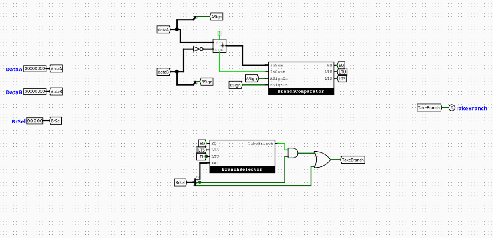
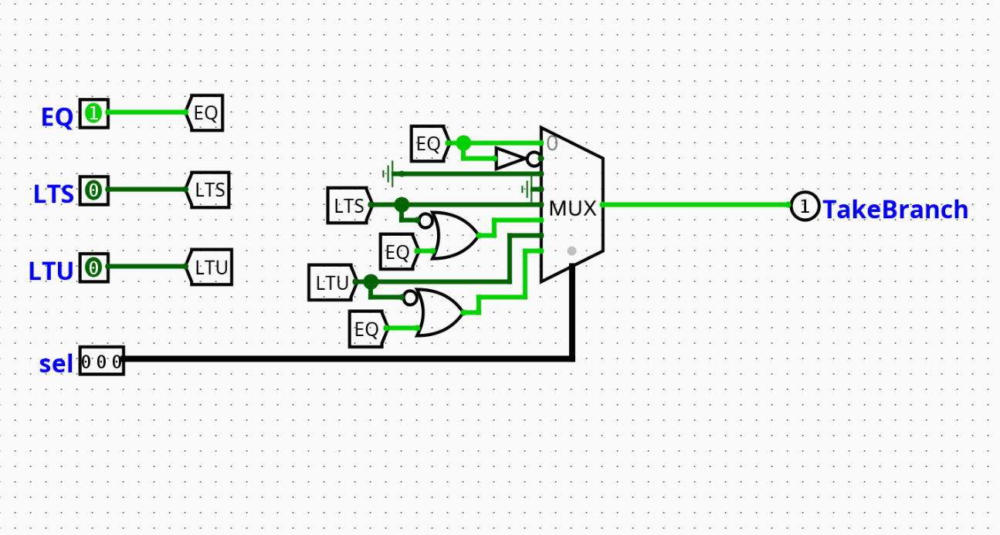
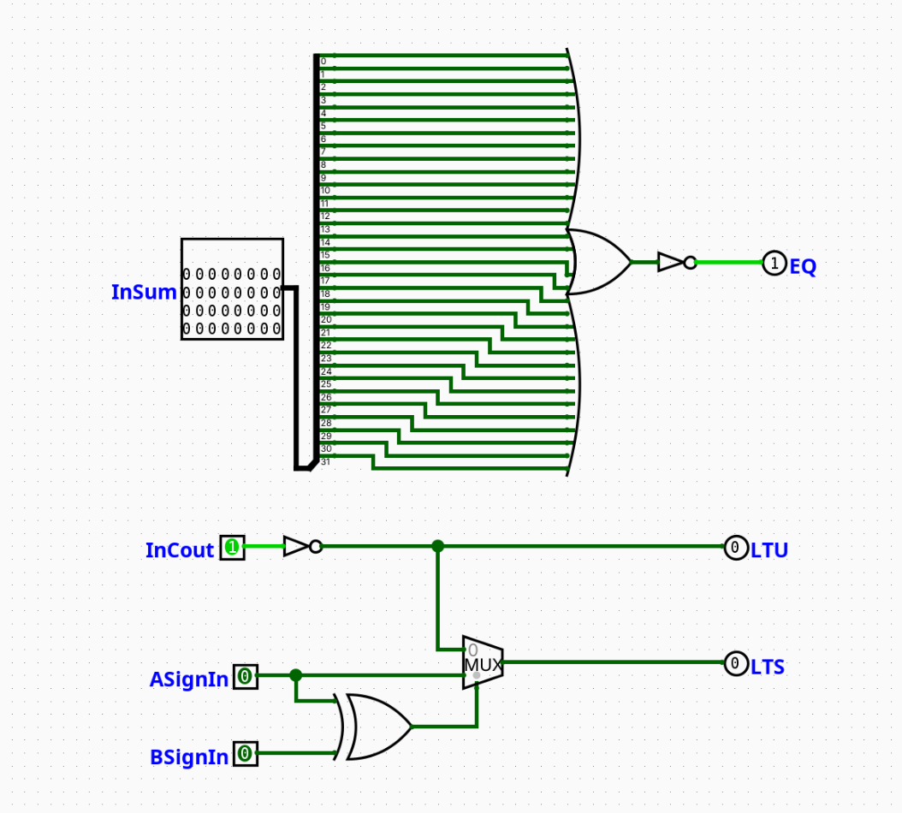

Branch Control Unit
Overview
The Branch Control Unit is a top-level macro-module that determines whether the program counter should branch or jump. It acts as a structural wrapper around an internal Two's Complement Adder, the WordLevelComparator, and the BranchSelector submodules. It combines arithmetic subtraction with instruction-level verification to produce a single TakeBranch output signal.
- Purpose in CPU: Decides whether a conditional branch or unconditional jump should alter the program counter.
-
Role in datapath: Sits in the ID/EX stage boundary; consumes register operands and instruction metadata, produces the
TakeBranchcontrol signal used by PC steering logic. -
Source:
logisim/RiskVControl.circ
Interface
Inputs
| Signal | Width | Description |
|---|---|---|
rs1_data[31:0] |
32 | Data word read from Register File Port 1 (Operand A). |
rs2_data[31:0] |
32 | Data word read from Register File Port 2 (Operand B). |
BrSel[4:0] |
5 | Composite selection bus. BrSel[2:0] = funct3 (Instruction[14:12]). BrSel[3] = Is_Branch from Main Controller. BrSel[4] = Is_Jump (asserted for JAL or JALR). |
Outputs
| Signal | Width | Description |
|---|---|---|
TakeBranch |
1 | Final branch/jump signal. 1 = valid branch or jump condition met, 0 = sequential execution continues. |
Output Logic (Core Definition)
Rule-based definition
- If
Is_Jump(BrSel[4]) = 1 (JAL or JALR): TakeBranch= 1 (unconditional, bypasses comparator)- If
Is_Branch(BrSel[3]) = 1 andConditionMet= 1: TakeBranch= 1- Otherwise:
TakeBranch= 0
Boolean expression
Internal Design
The component is structured as four sequential abstraction layers:
- Two's Complement Subtractor — computes
rs1_data - rs2_dataviaA + NOT(B) + 1, producing a result bus, carry-out, and overflow flag. WordLevelComparator— interprets the subtraction result, carry-out, and sign bits to deriveEQ,LTS, andLTUflags. See Branch Comparator submodule below.BranchSelector— usesBrSel[2:0](funct3) to select the relevant condition flag and outputsConditionMet. See Branch Selector submodule below.- Gating logic — ANDs
ConditionMetwithIs_Branch(BrSel[3]) to prevent false triggers on non-branch instructions; ORs the result withIs_Jump(BrSel[4]) to handle unconditional jumps.
All logic is gate-level combinational. No registers or clocked elements are present in this module.
Operation
rs1_dataandrs2_dataarrive from the register file.- The internal subtractor computes
rs1_data - rs2_dataand emits result, carry-out, and sign bits. - The
WordLevelComparatorevaluates those outputs intoEQ,LTU, andLTSflags. - The
BranchSelectorusesBrSel[2:0](funct3) to select the correct flag and assertsConditionMet. - The gating layer ANDs
ConditionMetwithIs_Branch; ORs withIs_Jump. TakeBranchis asserted or de-asserted in the same clock cycle.
Pipeline Interaction
- Active during the ID stage, using operands forwarded from the register file.
TakeBranchis consumed by the PC steering logic before the next fetch cycle.- Branches resolved here reduce the branch penalty compared to resolving in EX or MEM.
Is_BranchandIs_Jumporiginate from the Main Control Unit and are available in the same cycle via theBrSelbus.
Examples
Example: BEQ — operands equal
Inputs:
rs1_data=0x00000005,rs2_data=0x00000005BrSel=0b01000(Is_Branch=1,Is_Jump=0,funct3=000)
Outputs:
EQ= 1,ConditionMet= 1,TakeBranch= 1
Example: BNE — operands equal (branch not taken)
Inputs:
rs1_data=0x00000005,rs2_data=0x00000005BrSel=0b01001(Is_Branch=1,Is_Jump=0,funct3=001)
Outputs:
EQ= 1,ConditionMet= 0 (BNE requires NOT EQ),TakeBranch= 0
Example: JAL — unconditional jump
Inputs:
BrSel[4]= 1 (Is_Jump)
Outputs:
TakeBranch= 1 (comparator result irrelevant)
Limitations / Assumptions
- Assumes valid RV32I instruction encoding on
BrSel. - No exception handling for invalid
funct3encodings. funct3values010and011are unused;BranchSelectoroutputs0for these.- Combinational propagation delay not modeled.
- JALR and JAL are treated identically by this module (
Is_Jump= 1 for both).
Implementation Notes (Logisim)
- Built using standard Logisim components only.
- Subtraction implemented as
A + NOT(B) + 1using a full adder with carry-in tied high. WordLevelComparatorandBranchSelectorplaced as named subcircuits.- Gate-level AND/OR used for final
TakeBranchgating — no tunnels crossing subcircuit boundaries. - Signal widths follow RV32I spec (32-bit data, 5-bit
BrSelbus, 1-bit control outputs).
Submodules
Branch Selector
Overview
The Branch Selector (BranchSelector) determines whether a conditional branch instruction should be taken by selecting the correct comparison flag for the current instruction type. It receives pre-computed comparison flags from the WordLevelComparator and uses the funct3 field to select among them, outputting a single TakeBranch signal.
- Purpose in CPU: Filters raw comparison flags down to a single branch-taken decision based on instruction type.
- Role in datapath: Sits between the
WordLevelComparatorand the final gating logic inside the Branch Control Unit. - Type: Combinational
📌 Diagram:

Interface
Inputs
| Signal | Width | Description |
|---|---|---|
EQ |
1 | Equality flag from the WordLevelComparator. High if rs1 == rs2. |
LTU |
1 | Unsigned less-than flag from the WordLevelComparator. |
LTS |
1 | Signed less-than flag from the WordLevelComparator. |
Branch_Op |
3 | funct3 field (Instruction[14:12]) from the instruction bus. |
Outputs
| Signal | Width | Description |
|---|---|---|
TakeBranch |
1 | 1 = branch condition satisfied, 0 = continue sequential execution. |
Output Logic (Core Definition)
Rule-based definition
- If
Branch_Op=000(BEQ):TakeBranch=EQ - If
Branch_Op=001(BNE):TakeBranch=NOT(EQ) - If
Branch_Op=010:TakeBranch= 0 (unused) - If
Branch_Op=011:TakeBranch= 0 (unused) - If
Branch_Op=100(BLT):TakeBranch=LTS - If
Branch_Op=101(BGE):TakeBranch=NOT(LTS) - If
Branch_Op=110(BLTU):TakeBranch=LTU - If
Branch_Op=111(BGEU):TakeBranch=NOT(LTU)
Truth table
Branch_Op |
Instruction | Condition | MUX Input Source |
|---|---|---|---|
000 |
BEQ | A == B |
EQ |
001 |
BNE | A != B |
NOT(EQ) |
010 |
— | Unused | Hardwired 0 |
011 |
— | Unused | Hardwired 0 |
100 |
BLT | A < B (signed) |
LTS |
101 |
BGE | A >= B (signed) |
NOT(LTS) |
110 |
BLTU | A < B (unsigned) |
LTU |
111 |
BGEU | A >= B (unsigned) |
NOT(LTU) |
Internal Design
- Implemented as an 8-to-1 MUX controlled by
Branch_Op. EQ,NOT(EQ),LTS,NOT(LTS),LTU,NOT(LTU)are pre-computed via NOT gates and wired to the appropriate MUX inputs.- MUX inputs 2 and 3 are hardwired to ground (
0) for unusedfunct3encodings. - No registers; purely combinational.
Operation
EQ,LTU,LTSarrive from theWordLevelComparator.- NOT gates derive the inverse of each flag.
- All six values (three flags + three inverses) and two ground wires are routed to MUX inputs 0–7.
Branch_Opselects the relevant MUX input.TakeBranchis output in the same cycle.
Pipeline Interaction
N/A — internal submodule of the Branch Control Unit; no direct pipeline register interface.
Examples
Example: BLT — rs1 < rs2 (signed)
Inputs:
LTS= 1,EQ= 0,LTU= 0Branch_Op=100
Outputs:
TakeBranch= 1
Example: BGE — rs1 < rs2 (branch not taken)
Inputs:
LTS= 1Branch_Op=101
Outputs:
TakeBranch= 0 (NOT(LTS)= 0)
Limitations / Assumptions
- Assumes
Branch_Opencodes a valid RV32I branchfunct3. - Inputs
010and011are not defined in RV32I branch instructions; outputs0for these. - No runtime validation of input signals.
- Combinational delay not modeled.
Implementation Notes (Logisim)
- 8-to-1 MUX controlled by the 3-bit
Branch_Opinput. - NOT gates on
EQ,LTS,LTUfor inverse paths. - Inputs 2 and 3 tied to ground.
- All standard Logisim components; no external libraries.
Branch Comparator (WordLevelComparator)
Overview
The Branch Comparator (WordLevelComparator) evaluates relational comparisons between two 32-bit operands by interpreting the outputs of an external Two's Complement subtractor. It derives equality, unsigned less-than, and signed less-than flags without performing any arithmetic itself.
- Purpose in CPU: Translates raw subtraction artifacts (result bus, carry-out, sign bits) into clean logical comparison flags.
- Role in datapath: Intermediate layer inside the Branch Control Unit, between the subtractor and the
BranchSelector. - Type: Combinational
📌 Diagram:

Interface
Inputs
| Signal | Width | Description |
|---|---|---|
Result_In[31:0] |
32 | Result bus output from the subtractor block. |
Cout_In |
1 | Carry-out bit from the subtractor block. |
A_Sign |
1 | Sign bit (bit 31) of operand A (rs1_data[31]). |
B_Sign |
1 | Sign bit (bit 31) of operand B (rs2_data[31]). |
Outputs
| Signal | Width | Description |
|---|---|---|
EQ |
1 | High if A == B. |
LTU |
1 | High if A < B under unsigned comparison rules. |
LTS |
1 | High if A < B under signed Two's Complement rules. |
Output Logic (Core Definition)
Rule-based definition
- EQ: If all 32 bits of
Result_Inare0→EQ= 1 - LTU: If subtraction underflows (carry-out not asserted) →
LTU=NOT(Cout_In) - LTS:
- If
A_Sign XOR B_Sign= 0 (same sign): overflow impossible →LTS=LTU - If
A_Sign XOR B_Sign= 1 (different signs): negative A is always less →LTS=A_Sign
Boolean expressions
EQ = NOR(Result_In[31:0])
LTU = NOT(Cout_In)
LTS = (A_Sign AND (A_Sign XOR B_Sign)) OR (LTU AND NOT(A_Sign XOR B_Sign))
Internal Design
- EQ is derived from a 32-input NOR tree over
Result_In[31:0]. All bits zero → output high. - LTU is a single NOT gate on
Cout_In. Unsigned underflow drives carry-out low. - LTS uses:
- An XOR gate on
A_SignandB_Signto detect sign mismatch. - A 2-to-1 MUX (selector =
A_Sign XOR B_Sign):- Select
0(same sign): routesLTUto output. - Select
1(different sign): routesA_Signto output.
- Select
All logic is gate-level combinational. No registers.
Operation
Result_In,Cout_In,A_Sign, andB_Signarrive from the external subtractor.EQ:Result_Inpasses through the 32-input NOR tree.LTU:Cout_Inis inverted.LTS: XOR gate evaluates sign mismatch; MUX selects betweenLTUandA_Signaccordingly.- All three flags are output in the same cycle.
Pipeline Interaction
N/A — internal submodule of the Branch Control Unit; no direct pipeline register interface.
Examples
Example: Signed comparison — A negative, B positive
Inputs:
A_Sign= 1,B_Sign= 0 →A_Sign XOR B_Sign= 1 (different signs)
Outputs:
LTS=A_Sign= 1 (negative A is always less than positive B)
Example: Unsigned comparison — A < B, no carry-out
Inputs:
Cout_In= 0
Outputs:
LTU=NOT(0)= 1
Example: Equality — A == B
Inputs:
Result_In=0x00000000
Outputs:
EQ= 1
Limitations / Assumptions
- Assumes subtraction is performed externally as
A + NOT(B) + 1with correct carry-out semantics. - Sign bits (
A_Sign,B_Sign) must be tapped directly from operand bit 31 before subtraction. - No exception handling for malformed inputs.
- Combinational delay of the NOR tree not modeled.
Implementation Notes (Logisim)
- 32-input NOR tree for
EQbuilt from cascaded 2-input NOR gates in Logisim. - Single NOT gate for
LTU. - XOR gate + 2-to-1 MUX for
LTSpath selection. - All standard Logisim components; no external libraries.
- Signal widths follow RV32I spec.